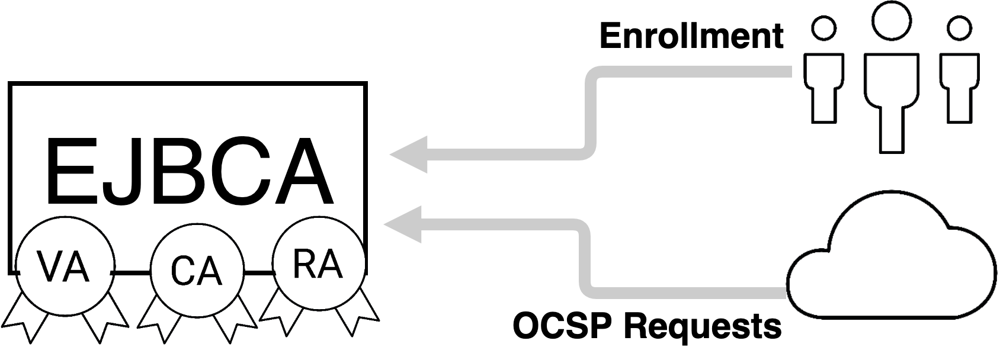
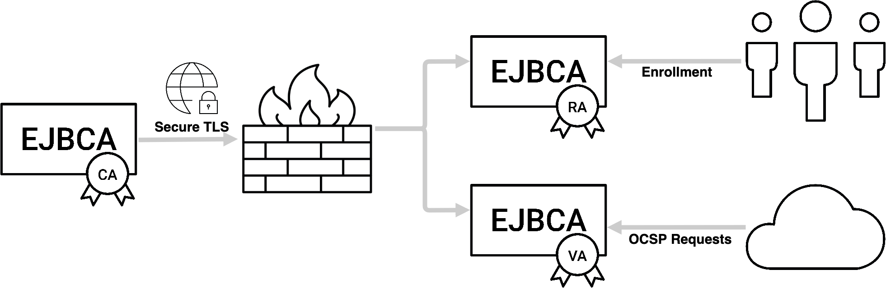
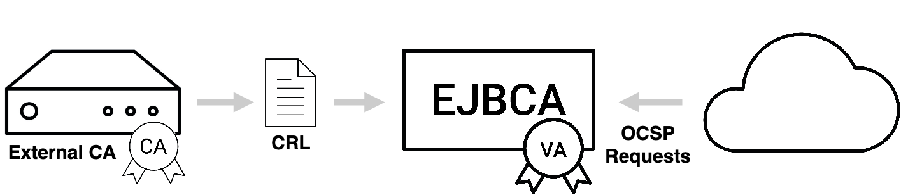
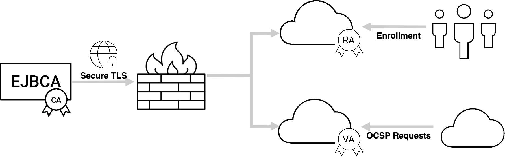
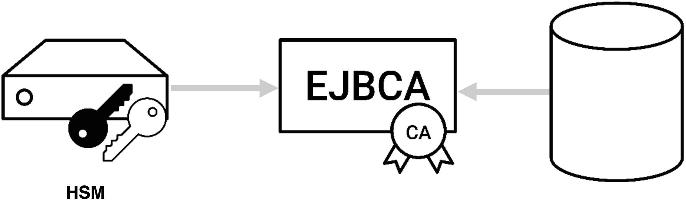
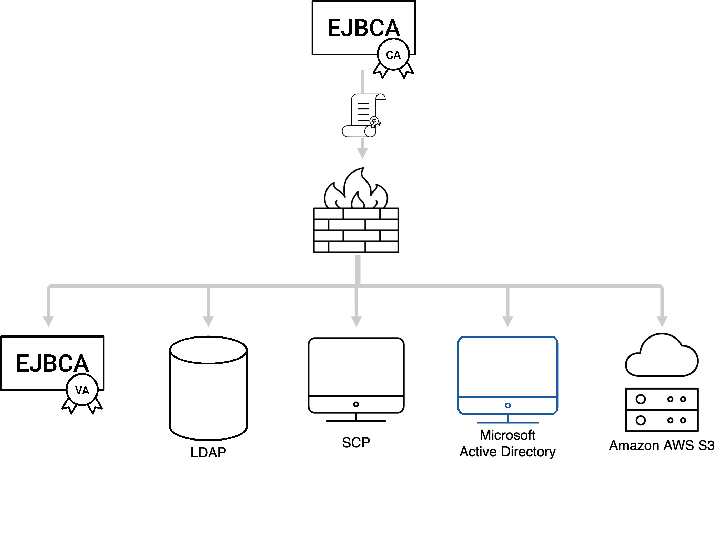
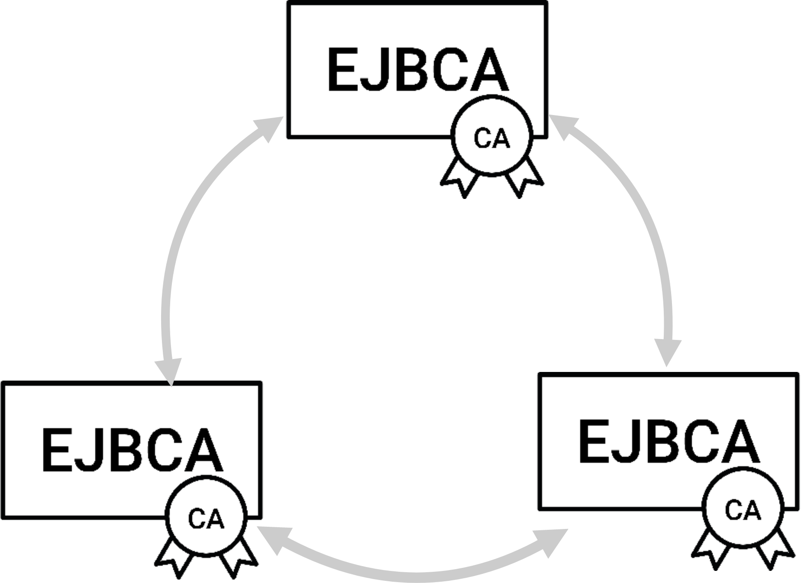

EJBCA Architecture
The following sections outlines a selection of common PKI architectures deployed and other aspects of Enterprise Integration PKI architectures such as Key Management, Certificate Distribution, and Clustering and High Availability.
PKI Architecture
There are multiple ways that you can implement and architect a PKI solution, ranging from simple and low cost, to very complex and costly. EJBCA allows implementing virtually any type of PKI architecture and the following sections describe a selection of common PKI architectures deployed. The following describes the various ways EJBCA can be set up as part of a PKI.
Standalone CA/RA/VA
A single installation of EJBCA acting as CA, RA and VA. EJBCA supports full multi-tenancy, so multiple CA instances can inhabit the same installation.

For more information, see Using EJBCA as a Standalone CA/RA/VA.
CA with distributed RAs and/or VAs
ENTERPRISE This is an EJBCA Enterprise feature.
EJBCA can be set up using PrimeKey's Peer Protocol to communicate with other instances of EJBCA acting as RA and/or VA in its stead in order to improve performance and add security by being able to place the CA behind a firewall allowing for only outgoing connections.

For more information, see EJBCA with distributed RA/VAs.
Standalone VA
EJBCA can be deployed as a standalone VA serving the OCSP needs of non-EJBCA installations by periodically reading CRLs.

For more information, see Synchronizing the VA Database and CRL Download Service.
Hybrid PKI with Public Cloud
ENTERPRISE This is an EJBCA Enterprise feature.
EJBCA is suitable to deploy in a cloud installation or in hybrid on-premises and cloud environment. A good example is keeping the most sensitive CA on-premises, while leveraging the public cloud distributed services and elasticity for Validation authorities or Registration Authorities.

You can with benefit leverage the EJBCA Enterprise Cloud Edition, in Amazon Web Services (AWS), to set up your cloud nodes.
Enterprise Integration
Besides the fundamental PKI installation, there are many other aspects to take in mind when designing a PKI architecture.
Key Management
For installations where a certain level of trust and security are required, keys need to be stored in a Hardware Security Module (HSM).

For more information on working with HSMs using EJBCA, see Hardware Security Modules (HSM).
For more information on PKI Appliance with a built-in HSM, refer to PrimeKey PKI Appliance.
Certificate Distribution
Since PKI is really a security infrastructure, it needs to be integrated fitting the security needs of the organization and use case. Each use case and organization have their own special needs making integration truly universal. One integration point that regularly occurs is integration with corporate directories or databases. EJBCA can publish information to directories, databases or other servers, using its vast array of Publishers.

For more information, see Publishers Overview.
Clustering and High Availability
The more mission critical the PKI infrastructure becomes, the more need for high availability and clustering. EJBCA, both CA and VA, can easily be clustered for availability and performance. The PKI architecture itself does not differ between clustered and non-clustered operations, but there are more servers involved.

Clustering for High Availability and Disaster Recovery can easily be set up using the PKI Appliance, as described in the blog post High Availability for PKI in 8 Simple Steps.
For more information, see High Availability and Clustering.
Auditing
To beef it up for fully audited trust center architecture, you will separate more functions into separate components and introduce more role based access to different part of the system. Some characteristics of such a system is:
Separated Root CAs and Issuing CAs.
Signed audit logs, log aggregation in separate log servers.
Separate database instances, with integrity protected database content (role separation between DBA and CA operators).
Separate Validation Authorities.
Separate network segments for all different components.
Monitoring and intrusion detection.
and more...
Automation and Large Scale Operations
In many modern use cases (often coined IoT, Industry 4.0 etc) you really want to have automated industrial processes, in some cases very high speed and with huge volumes. All the integration interfaces named above, CMP, Web service and SCEP are suitable for automated operations. In EJBCA you can configure a multitude of options for different levels of automation, different trust models and policies, etc. Finding the right options you can integrate with virtually everything, issuing certificates for anything.
Since EJBCA uses standard relational databases, suitable for large scale and high performance you can easily scale EJBCA to hundreds of millions issued certificates, and with some care even billions. Depending on the architecture and interfaces chosen you can reach very low latency (sub 100ms) and very high throughput (>100 certs/sec).
For more information, see Maximizing Performance.
Internal EJBCA Architecture
For information on the internal architecture of EJBCA, see Internal Architecture.